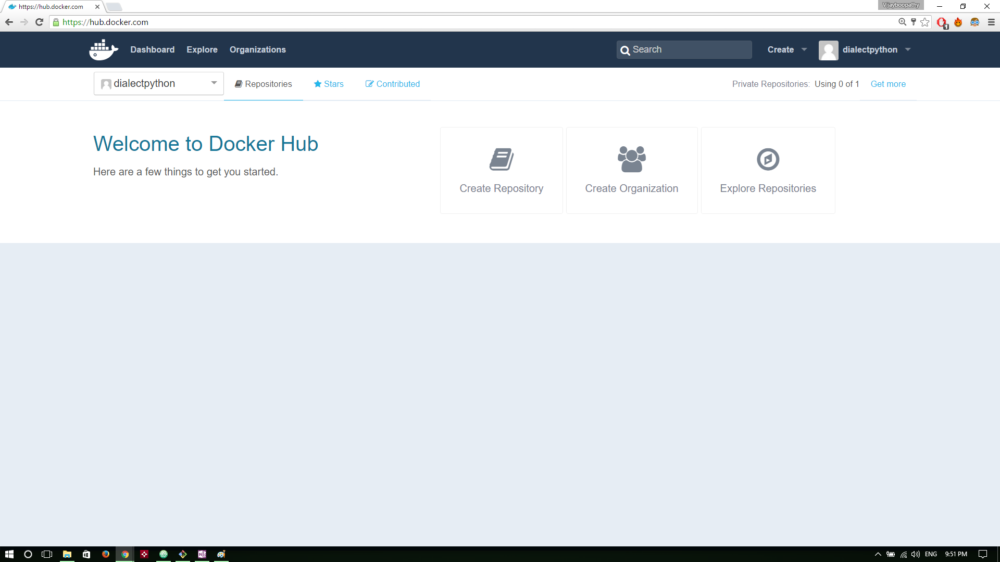

Dockerizing your Applications : Building Images and Working with Registries
In the previous session, we have learnt about various container operations such as running containers from pre built images, port mapping, inspecting and updating containers, limiting resources etc., In this chapter, we are going to learn about how to build containers for your individual applications, as well as how to work with docker hub registry to host and distribute the images.
Lab: Registering with the DockerHub
Since we are going to start working with the registry, build and push images to it later, its essential to have our own account on the registry. For the purpose of this tutorial, we are going to use the hosted registry i.e. Dockerhub.
Steps to create Dockerhub account
Step 1:
Visit the following link and sign up with your email id
https://hub.docker.com/

Step 2:
Check your email inbox and check the activation email sent by docker team
Step 3:
After clicking on the activation link, you will be redirected to a log in page. Enter your credentials and log in

You will be launched to Dockerhub main page. Now the registration process is complete and you have account in Dockerhub!

Lab: Building Docker Images - A manual approach
Before we start building automated images, we are going to create a docker image by hand. We have already used the pre built image from the registry in the last session. In this session, however, we are going to create our own image with ghost installed. Since Ghost is a node.js based application, we will base our work on existing official image for node
Clone Repository for Java worker app
git clone https://github.com/schoolofdevops/voting-app-worker.git
Launch a intermediate container to install worker app
Create a Container with schoolofdevops/voteapp-mvn:v1 image
docker run -idt --name interim schoolofdevops/voteapp-mvn sh
Copy over the Source Code
cd voting-app-worker
docker container cp . interim:/code
Connect to container to compile and package the code
docker exec -it interim sh
mvn package
Verify jarfile has been built
ls target/
java -jar target/worker-jar-with-dependencies.jar
Move the artifact, remove source code
mv target/worker-jar-with-dependencies.jar /run/worker.jar
rm -rf /code/*
[output]
Waiting for redis
Waiting for redis
Waiting for redis
Waiting for redis
^C
[use ^c to exit]
The above is the expected output. The worker app keeps waiting for redis and then later db in a loop.
Commit container to an image
- Exit from the container shell
- Note container ID
Commit the container into a image as,
docker container commit interim <docker hub user id >/worker:v1
Test before pushing by launching container with the packaged app
docker run --rm -it <docker hub user id >/worker:v1 java -jar /run/worker.jar
Push Image to registry
Before you push the image, you need to be logged in to the registry, with the docker hub id created earlier. Login using the following command,
docker login
To push the image, first list it,
docker image ls
[Sample Output]
REPOSITORY TAG IMAGE ID CREATED SIZE
initcron/worker v2 90cbeb6539df 18 minutes ago 194MB
initcron/worker v1 c0199f782489 34 minutes ago 189MB
To push the image,
docker push <dockrhub user id>/worker:v1
Lab: Building Images with Dockerfile
Now, lets build the same image, this time with Dockerfile. To do this, create a file by name Dockerfile in the root of the source code.
file: Dockerfile
FROM schoolofdevops/maven
WORKDIR /app
COPY . .
RUN mvn package && \
mv target/worker-jar-with-dependencies.jar /run/worker.jar && \
rm -rf /app/*
CMD java -jar /run/worker.jar
Lets now build the image
docker image build -t <dockrhub user id>/worker:v2 .
docker image ls
Try building again,
docker image build -t <dockrhub user id>/worker:v2 .
This time, it does not build everything, but uses cache.
Testing the image
docker container run --rm -it <dockrhub user id>/worker:v2
Tag the image as latest,
docker image tag <dockrhub user id>/worker:v2 <dockrhub user id>/worker:latest
docker image ls
Finally, publish it to the registry,
docker image push <dockrhub user id>/worker:latest
docker image push <dockrhub user id>/worker
References
Building Base Images: https://docs.docker.com/develop/develop-images/baseimages/